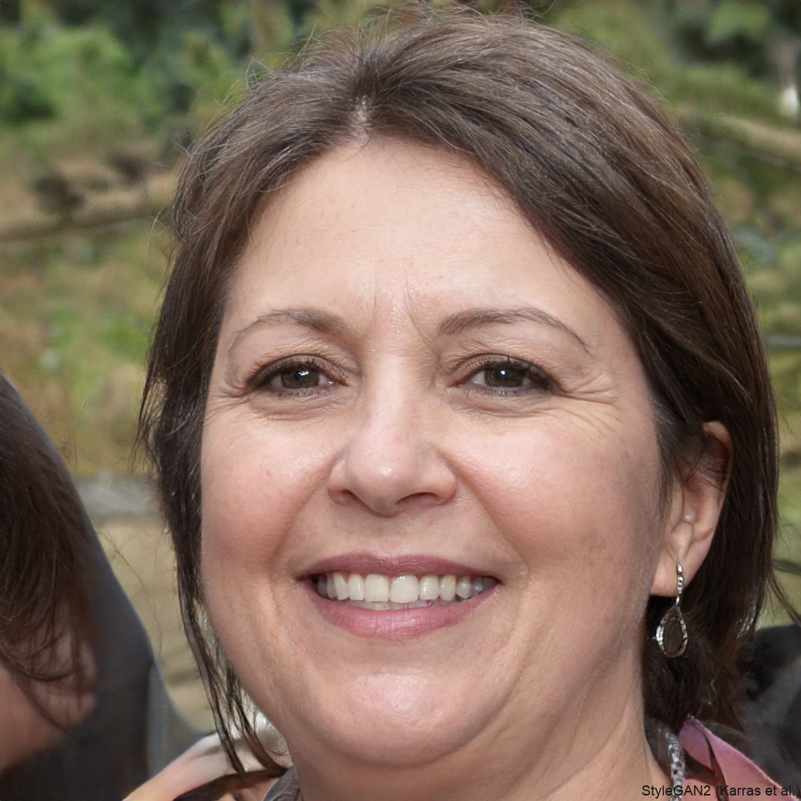
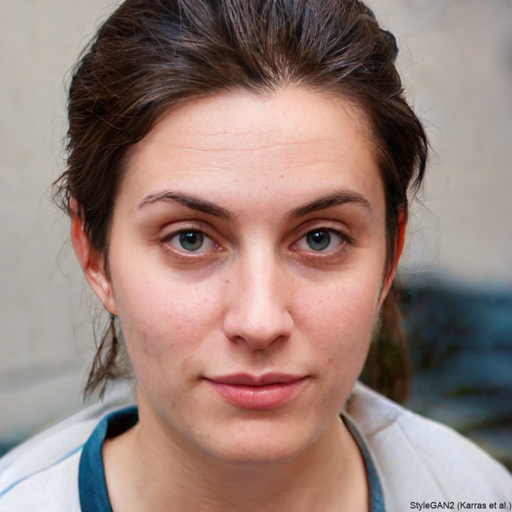
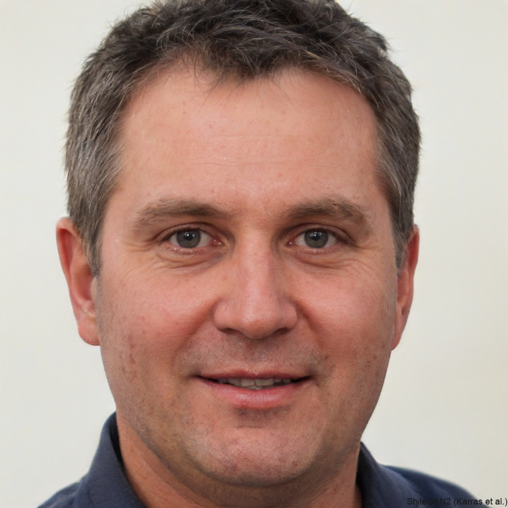
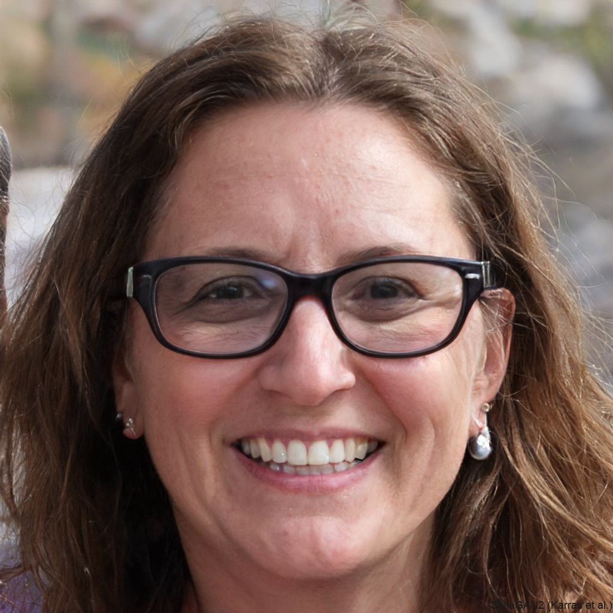
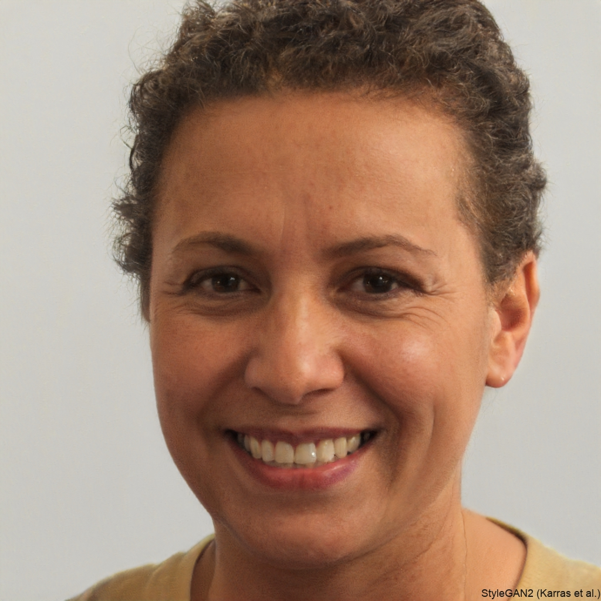
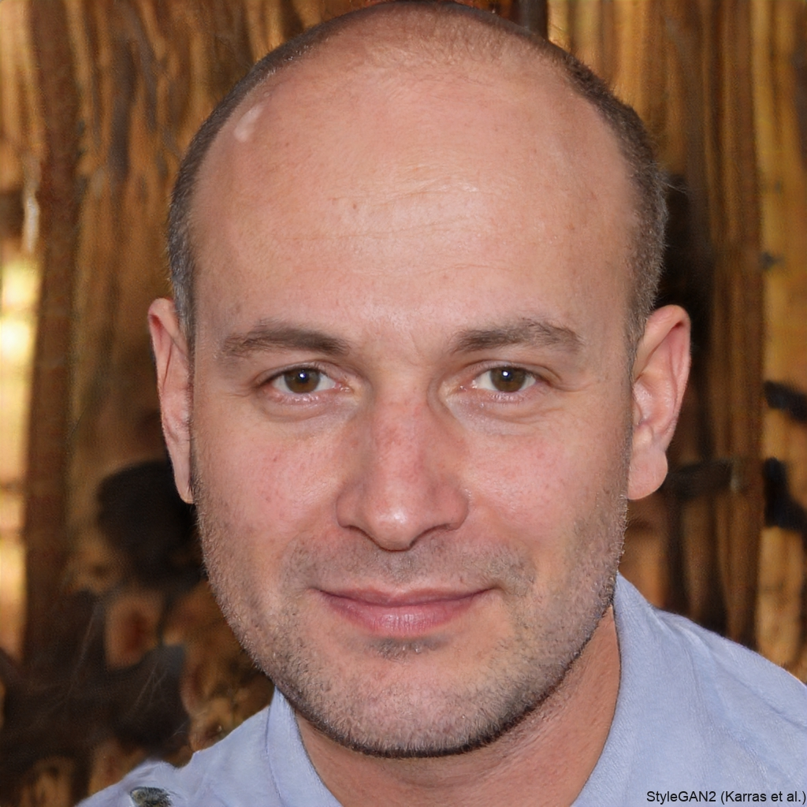
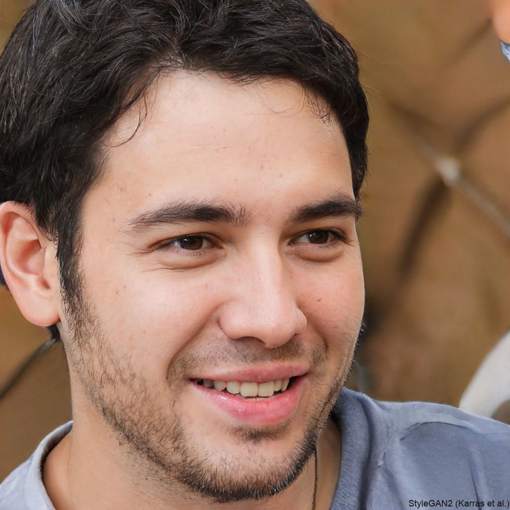
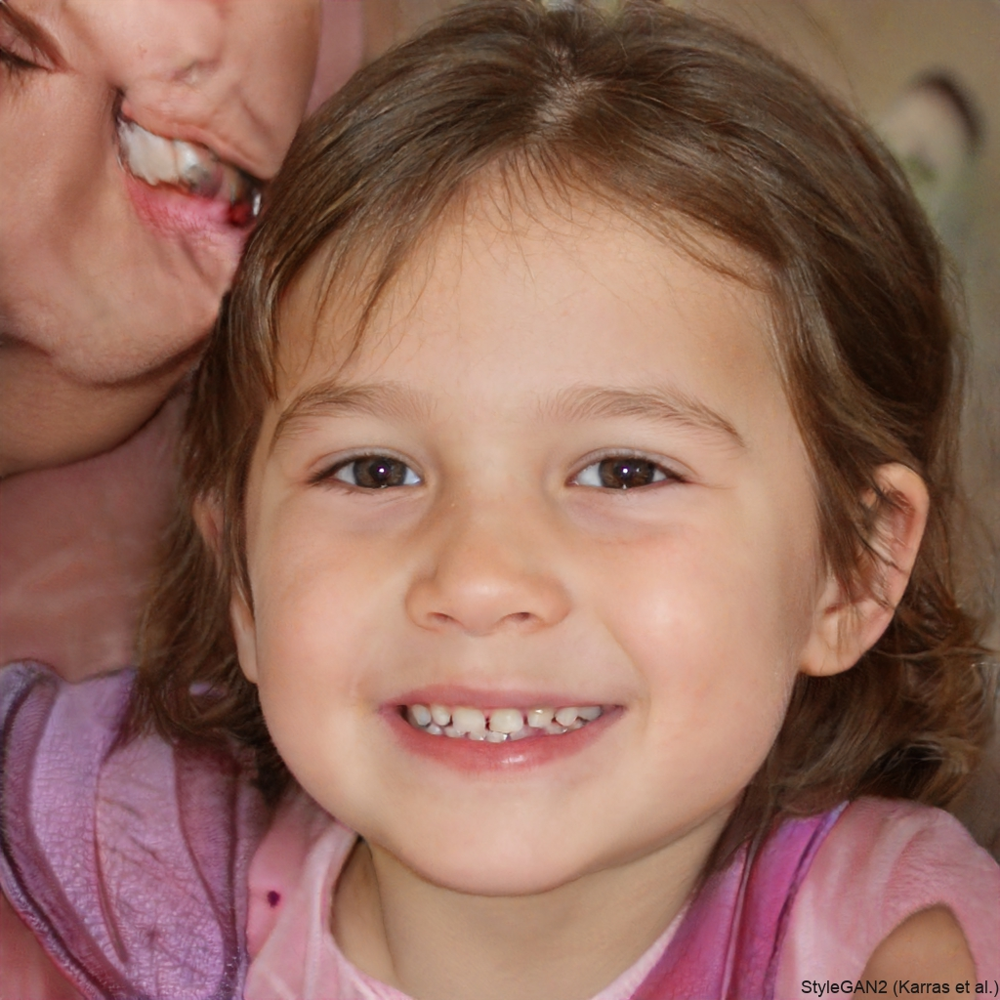
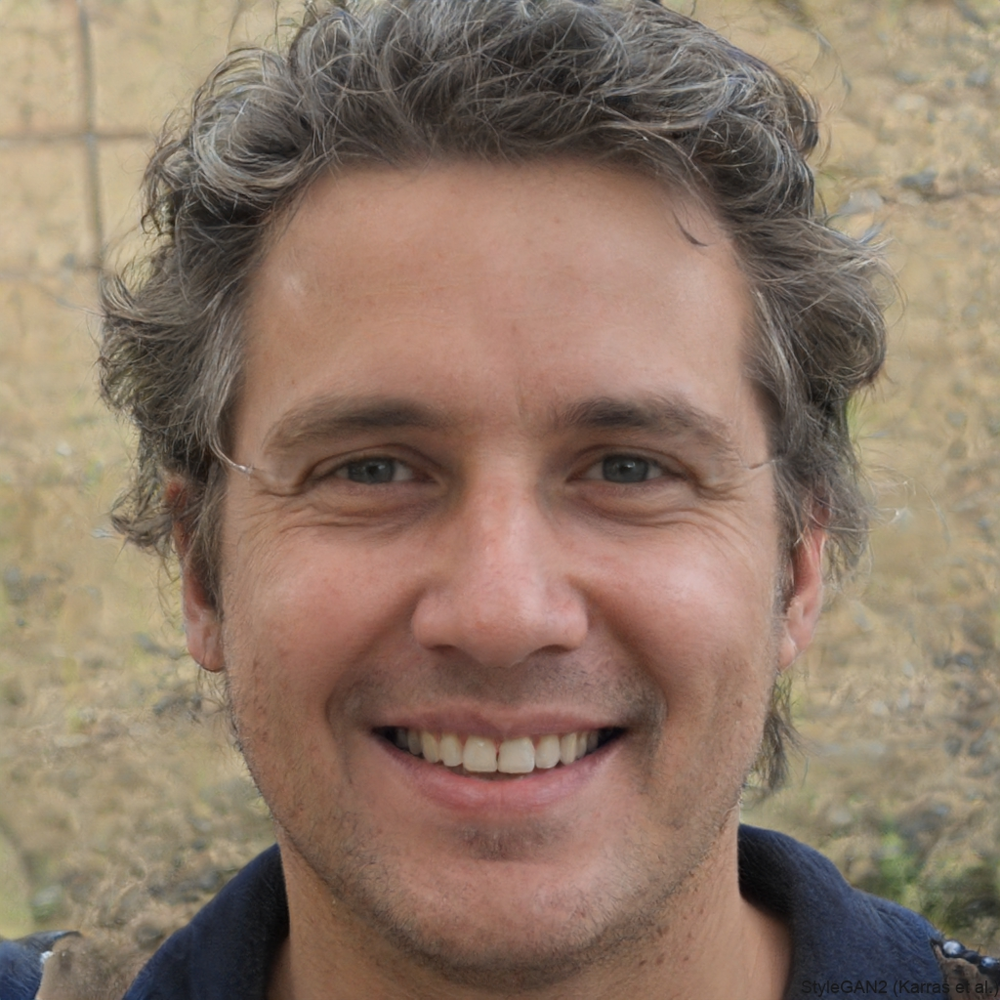
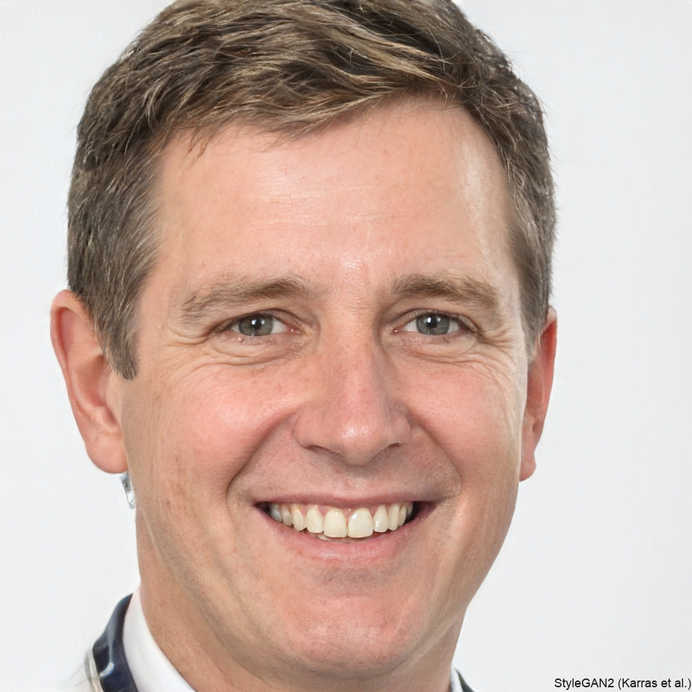

The Vancouver Grief Society is led by individuals who bring personal and professional experience in grief, healing, and community support.

Ann’s experience with deep grief began with the loss of her husband in 2010. Several years after his death she happened on a flyer for the Lower Mainland Grief Recovery Society and decided to take one of the organization’s grief groups. Like many who have participated in a group she found the experience uniquely supportive of her grief. Encouraged by that experience she undertook training and then became a facilitator for the organization in 2014. In 2019 Ann joined the board as facilitator liaison and in 2022 she was elected president. In addition to her board and facilitating responsibilities, Ann also co-facilitates with sister organizations and she serves as a grief educator in the community. To augment her understanding of the complexity of grief and bereavement she has completed a death and grief studies certification under the guidance of renowned grief educator Dr. Alan Wolfelt at the Center for Loss and Life Transition in Fort Collins, Colorado. Ann is a professional bookkeeper and administrative assistant. In her spare time she enjoys cooking for and entertaining her family and friends, attending as many Canucks games as possible, and enjoying Vancouver’s rich live music scene. She calls North Vancouver home, where she shares her life with the irrepressibly enthusiastic Cooper, her golden retriever.

Originally hailing from Victoria, Morgyn is a managing partner of the Vancouver firm Hammerco Lawyers LLP, where she practices personal injury law, bringing civil claims on behalf of survivors of sexual assault. Because she frequently works with people who are suffering trauma, loss, and grief, she continually seeks to better understand these issues. By educating herself and her colleagues, she brings to survivor work a deep understanding of how loss and grief can affect a person’s emotional, psychological, and physical well-being. Because she also believes deeply in the importance of supporting those who support people in grief, Morgyn gravitated to the VGS in 2013. Serving as board secretary, she brings to the organization her incisive intelligence and unflappable calm efficiency. In her spare time Morgyn loves to hike with her dogs, play tennis, and travel. An accomplished cook and baker, she is currently practicing to become a contestant on The Great Canadian Baking Show.

Chris is a native Vancouverite who has lived in various areas in the lower mainland for over 60 years. Chris’s first career as a personal coach and career specialist allowed her to help hundreds of people with transition and loss. Following the death of a friend to suicide in 2005, Chris began intentionally learning about grief and bereavement. In 2008 she became a VGS facilitator, then over the years helped to develop numerous educational materials and refine the organization’s internal processes. Chris served as board president from 2015-2022. Currently she has multiple roles in the organization. In addition to serving as board member, grief group facilitator, and facilitator liaison, she also conducts grief education in the society’s GEW and in community workshops and presentations. Chris’s far-ranging interests in art, music, writing, and nature have led her into activities as diverse as stand-up comedy and magic, rock and jazz singing and archery. As a lifelong learner and practitioner, she brings energy and insight to her work on the board and compassionate wisdom to those in deep grief.

Karen is a poet, freelance writer, and editor. Born and raised in Florida, she moved to Boston in 1978 and then with her young family to Vancouver in 2004. In 2019 she lost her husband of 36 years to illness. Karen found tremendous support in VGS grief groups and in 2022 trained to become a grief group facilitator. She has served on the VGS board since 2024, overseeing community relations and communications. In 2023 she served as writer-in-residence at the Joy Kogawa House in Vancouver, where she developed grief haikus and prose into a haibun manuscript of life with her husband, his death, and her ensuing grief. In the fall of 2025 she will serve as one of seven Citizen Poets for the City of Vancouver, interviewing residents about long-ago grief and weaving their stories into a single found poem that will reside in the city’s audio archive. Karen is passionate about writing poetry, U.S. political history, and discovering new visual artists and musicians. She lives in Vancouver, where she takes long forest walks, hikes the north shore mountains, gardens, and is humored by her two adult children.

Laura Bowie

Maggie Campbell

Jen Clement

Bianca Guthrie

Carolyn Main (Emeritus)

Catherine Hejnahl (Grief Educator)